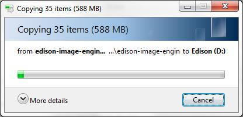

Step 2: Copy over the latest image
Extract the contents of the Yocto complete image zip, then copy the contents to your Intel® Edison drive.

-
Get the latest Yocto firmware image for the Intel® Edison.
Hackathon attendees:
- On the USB key: files → Firmware - Edison Yocto complete image
- Copy edison-image-[version].zip to your computer.
Online option:
- Visit the Intel® Edison Software Downloads page: software.intel.com/iot/hardware/edison/downloads.
- Scroll down to the “Intel® Edison firmware and operating system image” section.
- Click “Yocto complete image” to download the latest edison-image-[version].zip to your computer.
Interested in finding out what’s new with each firmware release?
Visit Intel® Edison Boards and Compute Modules — Support Package Release Notes to view the release notes PDF.
-
Extract the contents of edison-image-[version].zip to your hard drive.
-
Copy the entire contents of the edison-image-[version] folder to the “Edison” drive that shows up after plugging the Intel® Edison to your computer.
Do not include the containing/parent edison-image-[version] folder; just the contents of the folder.

Your “Edison” drive should now look similar to this: